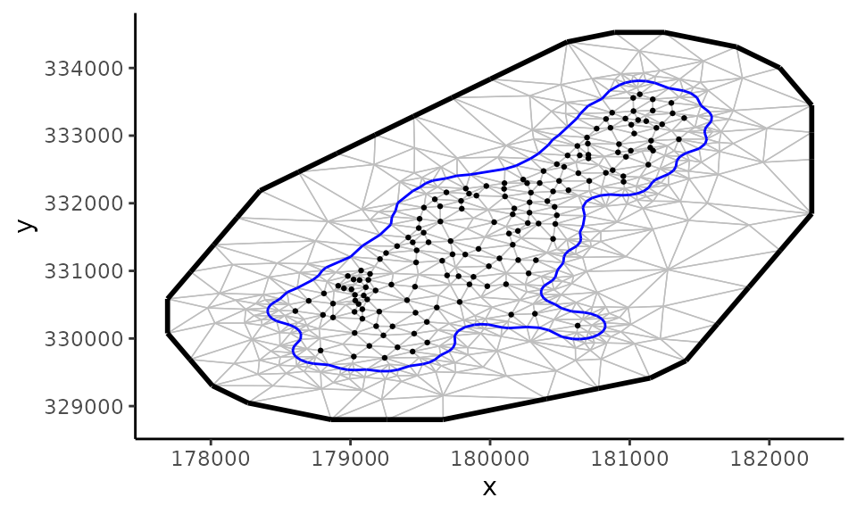

This vignette details the different covariance structures available in clustTMB.
| Covariance | Notation | No..of.Parameters | Data.requirements |
|---|---|---|---|
| Spatial GMRF | gmrf | 2 | spatial coordinates |
| AR(1) | ar1 | 2 | unit spaced levels |
| Rank Reduction | rr(random = H) | JH - (H(H-1))/2 | |
| Spatial Rank Reduction | rr(spatial = H) | 1 + JH - (H(H-1))/2 | spatial coordinates |
clustTMB fits spatial random effects using a Gaussian Markov Random Field (GMRF). The precision matrix, \(Q\), of the GMRF is the inverse of a Matern covariance function and takes two parameters: 1) \(\kappa\), which is the spatial decay parameter and a scaled function of the spatial range, \(\phi = \sqrt{8}/\kappa\), the distance at which two locations are considered independent; and 2) \(\tau\), which is a function of \(\kappa\) and the marginal spatial variance \(\sigma^{2}\):
\[\tau = \frac{1}{2\sqrt{\pi}\kappa\sigma}.\] The precision matrix is approximated following the SPDE-FEM approach , where a constrained Delaunay triangulation network is used to discretize the spatial extent in order to determine a GMRF for a set of irregularly spaced locations, i$.
\[\omega_{i} \sim GMRF(Q[\kappa, \tau])\]
Prior to fitting a spatial cluster model with clustTMB, users need to set up the constrained Delaunay Triangulation network using the R package, fmesher. This package provides a CRAN distributed collection of mesh functions developed for the package, R-INLA. For guidance on setting up an appropriate mesh, see Triangulation details and examples and Tools for mesh assessment from
In this example, the following mesh specifications were used:
loc <- meuse[, 1:2]
Bnd <- fmesher::fm_nonconvex_hull(as.matrix(loc), convex = 200)
meuse.mesh <- fmesher::fm_mesh_2d(as.matrix(loc),
max.edge = c(300, 1000),
boundary = Bnd
)## Loading required namespace: INLA
Coordinates are converted to a spatial point dataframe and read into the clustTMB model, along with the mesh, using the spatial.list argument. The gating formula is specified using the gmrf() command:
Loc <- sf::st_as_sf(loc, coords = c("x", "y"))
mod <- clustTMB(
response = meuse[, 3:6],
family = lognormal(link = "identity"),
gatingformula = ~ gmrf(0 + 1 | loc),
G = 4, covariance.structure = "VVV",
spatial.list = list(loc = Loc, mesh = meuse.mesh)
)## Warning in clustTMB(response = meuse[, 3:6], family = lognormal(link = "identity"), : intercept removed from gatingformula
## when random effects specified## Warning in setup.spatialDat(n.i, spatial.list, projection.dat): spatial
## projection is turned off. Need to provide locations in projection.list$grid.df
## for spatial predictionsModels are optimized with nlminb(), model results can be viewed with nlminb commands:
# Estimated fixed parameters
mod$opt$par## betag betag betag betad betad betad betad
## 0.1778429 0.5710302 0.1653604 2.0157749 4.3160880 5.4259829 6.7095827
## betad betad betad betad betad betad betad
## 1.0064938 3.6030494 5.2113144 6.2155363 0.1259826 3.1475094 4.2016949
## betad betad betad betad betad theta theta
## 5.2523448 -1.4361501 3.1132989 4.2118630 5.1996611 -1.2100860 -2.9055387
## theta theta theta theta theta theta theta
## -1.2794701 -1.2502178 -2.5623866 -3.1154896 -2.2459434 -2.3607714 -1.8075107
## theta theta theta theta theta theta theta
## -4.0486825 -2.6845172 -3.0661891 -2.4648437 -3.3381083 -2.7804341 -2.6686093
## ln_kappag
## -5.9132664
# Minimum negative log likelihood
mod$opt$objective## [1] 2318.892When random effects, \(\mathbb{u}\), are specified in the gating network, the probability of cluster membership \(\pi_{i,g}\) for observation \(i\) is fit using multinomial regression:
\[ \begin{align} \mathbb{\eta}_{,g} &= X\mathbb{\beta}_{,g} + \mathbb{u}_{,g} \\ \mathbb{\pi}_{,g} &= \frac{ exp(\mathbb{\eta}_{,g})}{\sum^{G}_{g=1}exp(\mathbb{\eta}_{,g})} \end{align} \]